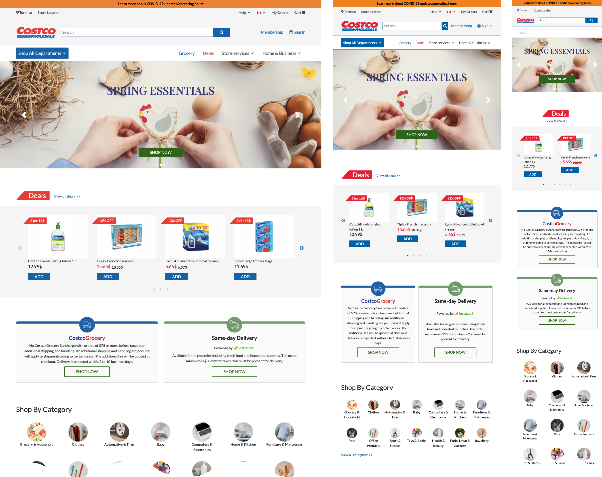

Conducting user research to reveal problems behind Costco's current website and prototyping redesigned pages with HTML, CSS, JavaScript (jQuery & Slick), and Bootstrap.

Project background: As a final project of the UX/UI Design Bootcamp, our team
decided to redesign Costco Wholesale’s website.
Project type: Group project / team of 3
Timeline: 2 weeks
My role: UX researcher, front-end developer
Tool used: Miro, Figma, HTML, CSS, JavaScript, jQuery, Bootstrap, Slick
The problem: Due to the pandemic, more people stopped shopping at actual stores and
began shopping online. However, Costco's great selection of products and services, which is one of
Costco's attractions, makes the website unpleasantly dense and not a desirable place to shop for
those users who want to minimize their time browsing e-commerce websites.
The solution: Redesign the existing website by organizing navigation systems and
implementing intuitive UI design with properly categorized sections and limiting the over-exposure
of products and services, so that users are able to focus on their goals.
Costco Wholesale is an American multinational corporation which operates a chain of membership-only big-box retail stores. Because of the pandemic, many customers are switching from in-store shopping to online. However, we believe that Costco is missing an opportunity to convert these customers due to a user experience which overwhelms first-time visitors especially those who are used to targeted-shopping rather than browsing. That’s why we have chosen to redesign the Costco wholesale website.
Heuristic evaluation
We started our research phase by conducting a heuristic evaluation on the Costco.ca website to understand more about it and build problem assumptions, which were used to create the user research plan later.
Key findings:
Survey
After defining our problem assumptions, we moved to user research by collecting quantitative and qualitative data. Firstly, we surveyed 20 participants with 10 questions related to their shopping experience and preferences.
Key findings:
User interviews
We also interviewed 6 users who have experienced shopping at Costco before. After we collected raw data, we analyzed it using an affinity diagram.
Affinity diagram
Key findings:
Creating a user persona
Based on our user research data from the survey and interviews, we created our user persona. This persona had been referenced often during our project when we made design decisions: "What does Sandra think about this?"
User insights
“I can definitely feel the Costco vibe from this (Costco’s current) website. I don’t know if that is good or not” - interviewee
Several interviewees mentioned that Costco.ca reminds of them actual Costco stores: so many things going on. Besides their thrifty price, the wide range of products and services is one of reason why Costco attracts customers. It provide positive shopping experience when people shop at stores. However, when that consept is presented on the website, the experience became rather overwhelming because the space is very limited and the way information can be conveyed is only by text or images. There need to be a different approach tailered to web.
Defining the problems
Problem statement:
“From our user research, we discovered that people who shop and provide essentials for their family want to minimize their time browsing e-commerce websites. However, Costco's great selection of products and services, which is one of Costco's attractions, makes the website unpleasantly dense and not a desirable place to shop for those users. How can we transform the browsing user journey at Costco.ca into an enjoyable shopping experience so they can minimize time and money spent online?”
Setting our scope
After defining the problems, our next step was to find out how we are going to solve those problems by generating ideas using a “I like, I wish and What if” brainstorming method. Next, we used the feature prioritization matrix to determine which features we would like to focus on for this project based on impact and feasibility.
Brainstorming
Feature prioritization matrix
Main features decided upon:
Make the deals category easier to find
Organize content on the homepage by limiting the amount of information shown
Make each section on the homepage distinguishable by adding proper headings and using different styles
Redesign the main navigation bar to provide an easier navigation system
Organizing the navigation
Our research confirmed that the navigation system and categorization of Costco.ca don’t fulfill their functions. Users felt it was very crowded and difficult to find items and company information. Hence, we rearranged the navigation categories, removed duplicated tabs, and grouped sections that relate to the same content.

Our team’s UI designer created low to high-fidelity prototypes using Figma. During the prototyping iterations, we conducted two rounds of user testing to find usability issues.

Based on the prototype that our team member created on Figma, I built a functional hi-fidelity prototype with three pages using HTML, CSS, JavaScript, jQuery, Bootstrap, and Slick.
Homepage:
Deals and Sales:
Household Items:
The biggest constraint I had with the front-end development phase was time; our whole project timeline was two weeks, so the time I could spend building the prototype was quite limited. Therefore, I did research and decided to use the CSS framework Bootstrap and jQuery plugin Slick to reduce the time of developing some complicated components. To align with the wireframe design, I restyled them with CSS overrides.
Using Bootstrap
Responsive dropdown navigation menu
Responsive footer menu
Hero section carousel
Using Slick
Responsive multi-item slider
Responsiveness
All three pages (homepage, deals, and household) are coded to be fully responsive for all device sizes using CSS flexbox.
DRY (Don’t Repeat Yourself) code
To reduce repetition of code, I used utility classes and component-specific classes in different situations.
Utility classes:
One example of using utility classes in this project was flexbox. Since flexbox was heavily used in all pages, I created classes with different flexbox styles. Depending on the design, I was able to use those classes in HTML and avoid writing those styles repeatedly in CSS. It also prevented making too-specific classes that can be only used for certain components.
Component-specific classes:
I used component-specific classes for some components that appear often throughout the site, such as buttons or cards. This kept the HTML clean, and it became easier to change those components’ styles in the future if necessary.
Final prototype
I worked as a UX researcher and FE developer in this project, and it was a great experience because I made many discoveries and learned a lot. For example, using a framework and library helped me shorten the time developing complicated components in the tight project schedule. However, many specific hard-coded CSS rules were required to override their default style, and the code got longer and more complicated. I learned the pros and cons of using frameworks and libraries and how the choice of whether to use them or not depends on project style. This experience gave me perspective as an FE developer in addition to the designer's point of view. I believe that this will help me make more easily implementable design decisions in the future.